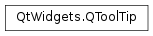

QToolTip¶
Synopsis¶
Detailed Description¶
The
PySide2.QtWidgets.QToolTipclass provides tool tips (balloon help) for any widget.The tip is a short piece of text reminding the user of the widget’s function. It is drawn immediately below the given position in a distinctive black-on-yellow color combination. The tip can be any
rich textformatted string.Rich text displayed in a tool tip is implicitly word-wrapped unless specified differently with
<p style='white-space:pre'>.The simplest and most common way to set a widget’s tool tip is by calling its
QWidget.setToolTip()function.It is also possible to show different tool tips for different regions of a widget, by using a
PySide2.QtGui.QHelpEventof typeQEvent.ToolTip. Intercept the help event in your widget’sPySide2.QtWidgets.QWidget.event()function and callQToolTip.showText()with the text you want to display. The Tooltips example illustrates this technique.If you are calling
QToolTip.hideText(), orQToolTip.showText()with an empty string, as a result of aToolTip-event you should also callPySide2.QtCore.QEvent.ignore()on the event, to signal that you don’t want to start any tooltip specific modes.Note that, if you want to show tooltips in an item view, the model/view architecture provides functionality to set an item’s tool tip; e.g., the
QTableWidgetItem.setToolTip()function. However, if you want to provide custom tool tips in an item view, you must intercept the help event in theQAbstractItemView.viewportEvent()function and handle it yourself.The default tool tip color and font can be customized with
PySide2.QtWidgets.QToolTip.setPalette()andPySide2.QtWidgets.QToolTip.setFont(). When a tooltip is currently on display,PySide2.QtWidgets.QToolTip.isVisible()returnstrueandPySide2.QtWidgets.QToolTip.text()the currently visible text.Note
Tool tips use the inactive color group of
PySide2.QtGui.QPalette, because tool tips are not active windows.See also
QWidget.toolTipQAction.toolTipTool Tips Example
-
static
PySide2.QtWidgets.QToolTip.font()¶ Return type: PySide2.QtGui.QFontReturns the font used to render tooltips.
See also
-
static
PySide2.QtWidgets.QToolTip.hideText()¶ Hides the tool tip. This is the same as calling
PySide2.QtWidgets.QToolTip.showText()with an empty string.
-
static
PySide2.QtWidgets.QToolTip.isVisible()¶ Return type: PySide2.QtCore.boolReturns
trueif this tooltip is currently shown.
-
static
PySide2.QtWidgets.QToolTip.palette()¶ Return type: PySide2.QtGui.QPaletteReturns the palette used to render tooltips.
Note
Tool tips use the inactive color group of
PySide2.QtGui.QPalette, because tool tips are not active windows.
-
static
PySide2.QtWidgets.QToolTip.setFont(arg__1)¶ Parameters: arg__1 – PySide2.QtGui.QFontSets the
fontused to render tooltips.See also
-
static
PySide2.QtWidgets.QToolTip.setPalette(arg__1)¶ Parameters: arg__1 – PySide2.QtGui.QPaletteSets the
paletteused to render tooltips.Note
Tool tips use the inactive color group of
PySide2.QtGui.QPalette, because tool tips are not active windows.See also
-
static
PySide2.QtWidgets.QToolTip.showText(pos, text, w, rect)¶ Parameters: - pos –
PySide2.QtCore.QPoint - text – unicode
- w –
PySide2.QtWidgets.QWidget - rect –
PySide2.QtCore.QRect
Shows
textas a tool tip, with the global positionposas the point of interest. The tool tip will be shown with a platform specific offset from this point of interest.If you specify a non-empty rect the tip will be hidden as soon as you move your cursor out of this area.
The
rectis in the coordinates of the widget you specify withw. If therectis not empty you must specify a widget. Otherwise this argument can be 0 but it is used to determine the appropriate screen on multi-head systems.If
textis empty the tool tip is hidden. If the text is the same as the currently shown tooltip, the tip will not move. You can force moving by first hiding the tip with an empty text, and then showing the new tip at the new position.- pos –
-
static
PySide2.QtWidgets.QToolTip.showText(pos, text, w, rect, msecShowTime) Parameters: - pos –
PySide2.QtCore.QPoint - text – unicode
- w –
PySide2.QtWidgets.QWidget - rect –
PySide2.QtCore.QRect - msecShowTime –
PySide2.QtCore.int
This is an overloaded function.
This is similar to
QToolTip.showText(pos,text,w,rect) but with an extra parametermsecDisplayTimethat specifies how long the tool tip will be displayed, in milliseconds.- pos –
-
static
PySide2.QtWidgets.QToolTip.showText(pos, text[, w=nullptr]) Parameters: - pos –
PySide2.QtCore.QPoint - text – unicode
- w –
PySide2.QtWidgets.QWidget
This is an overloaded function.
This is analogous to calling
QToolTip.showText(pos,text,w, QRect())- pos –
-
static
PySide2.QtWidgets.QToolTip.text()¶ Return type: unicode Returns the tooltip text, if a tooltip is visible, or an empty string if a tooltip is not visible.
© 2018 The Qt Company Ltd. Documentation contributions included herein are the copyrights of their respective owners. The documentation provided herein is licensed under the terms of the GNU Free Documentation License version 1.3 as published by the Free Software Foundation. Qt and respective logos are trademarks of The Qt Company Ltd. in Finland and/or other countries worldwide. All other trademarks are property of their respective owners.